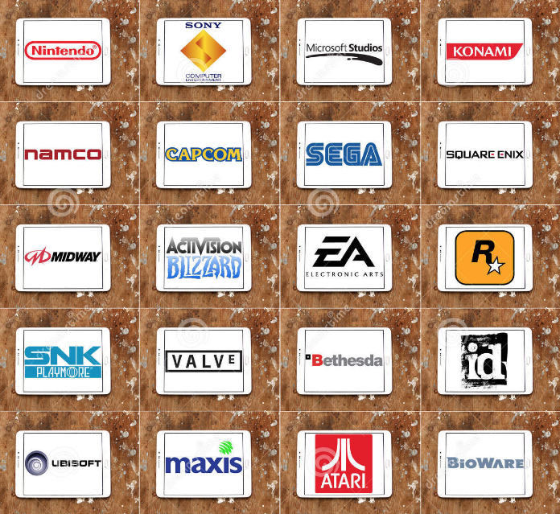

In developer news from 2016 and this year, Some developers have malganted into other developer game companies and some have closed or new ones have opened up. However this only concern small game developers mostly. Most developers especially the bigger companies have started to publish games for smaller or unknown game companies. A perfect example for this is Padadox Interactive publishing games from Colossal Order and 505 Games publishing a number of games from Bohemia Interactive.
Most game developers for the past two years have been focusing on Virtual Reality as it's a new gaming palform to sell games so most games this year would be compatiable with Virtual Reality headsets (further explained on the Gaming Platforms page).
Both developers and publishers this year are trying to cpmpete with bigger or smaller game companies. This prompts the companies to include exclusive features for example: a more immerse multiplayer or better game dynamics into there games so they could compete. The companies also have to develop and release new gaming engines for better graphics for games as some gaming platforms might not handle the more improved graphics that are released with the game. However, as the development of games continue the game developers have to invest in new gaming engines to keep up with the advancement in the development of gaming consoles.
These game developers below are both well known and not well known:
This image is from GDC 2013 Pre-Show Survey for new markets for developers.